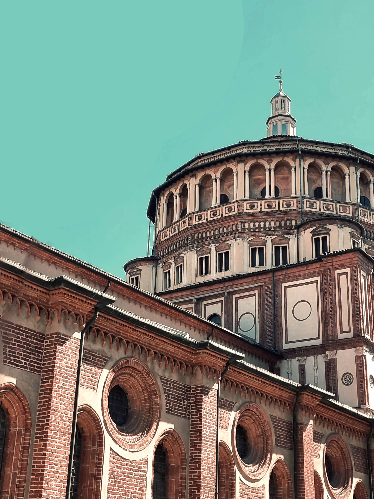

Bildredigering
Här får ni se fem olika bilder, både före och efter jag redigerade dem.
Bild 1
Originalbild

Redigerad bild

Denna bild var enkel att fixa på grund av att den enda märkvärdiga justeringen som hade gjorts var ljusstyrkan. Genom att öka den så kunde jag “fixa” den utan att ändra andra delar av bilden.
Bild 2
Originalbild

Redigerad bild

Denna bild var lite svårare eftersom min första tanke var att den enda effekten var att den var mättad. Men även efter redigeringen så ser det ut som om att något annat måste ha ändrats för att få den att bli så röd i första hand.
Bild 3
Originalbild

Redigerad bild

Till skillnad från förra bilden så var regeringarna självklara på denna bild. På grund av det svartvita utseendet så hade mättnaden sänkts så allt jag behövde göra var att öka den. Den hade också roteras runt 45 grader så det behövde också fixas.
Bild 4
Originalbild

Redigerad bild

Genom att använda trollspöet och sedan Photopeas lassomarkerigen så kunde jag sedan välja att fylla “i” fingret som fanns på bilden. Då valde jag “innehållsmedvetet” vilket då gjorde att programmet var medvetet av bildens utseende innan den tog bort tummen som då gjorde att den såg naturlig ut. Sist så justerade jag bilden så att den också såg mer naturligt ut.
Bild 5
Originalbild

Redigerad bild

Jag använde mig av trollspön för att få tag i dem magenta delarna av ögat som jag då ändrade genom att justera övertoningslagret på dem. Som majoriteten av dessa “fixade” bilder så kan man se några problem, speciellt på detta på hur varmt den gula färgen är.